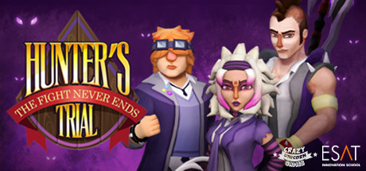

Hunter's Trial
Hunter's Trial
Details
|  | |
| Playtime | Not Played |
| Last Activity | Never |
| Added | 18/04/2020 |
| Modified | Never |
| Completion Status | Not Played |
| Source | Steam |
| Platform | PC |
| Release Date | 12/12/2018 |
| Community Score | 47 |
| Critic Score | |
| User Score | |
| Genre | Indie RPG Strategy |
| Developer | Crazy Unicorn ESAT |
| Publisher | ESAT |
| Feature | Single Player |
| Links | PCGamingWiki Community Hub Discussions Guides Store Page News |
Description
Surrounded by fields and an eerie forest, away from the rest of the world, lies something very unusual, a unique location most normal humans do not know about: the Dealain Academy, the school for monster hunters where humans with magical abilities are trained to face possible threats to humanity.
One day, the Academy suffers a surprise attack: a dark figure appears and petrifies all the students at the school. His minions, the Lairg, are one of the meanest enemies of the Academy. The Lairg mean to invade and destroy everything on their path, but unbeknownst to them, three young hunters have evaded the petrification (by skipping class by the way).
Seeing the attack and using their combat prowess, the three hunters face the Lairg, becoming the last and unlikely hope of the Dealain Academy.
Hunter's Trial: The fight never ends is a turn-based tactical RPG inspired by great classics like Final Fantasy Tactics and Fire Emblem. Players take control of Shaw, Jade and Gisli, the three worst students of the magical Dealain Academy, facing the evil and mighty Lairg lizards in tactical battles. Along five game stages, players will need to prepare the decks of magic cards that the hunters will use in their battles. Each character has a different set of cards that represent their combat abilities, allowing players to customize each deck to their will. As the hunters progress in the story, new cards will be unlocked.
Shaw
Gender: Male
Age: 18
Traits: Bravado, overconfident, egocentric.
Shaw is quite an egotistical character, although he is ready to take a hit if the need arises. However, his huge overconfidence and rushed decisions will most likely put he and his friends in danger sooner than later.
Background:
Shaw was born and raised in an affluent family, but he also liked to frequent the slums. His training and education have always leaned on the individualistic side. Paired with his natural ego, Shaw's abilities are then very peculiar and dangerous. Despite being apparently an egotistical person, deep down Shaw really appreciates his companions and is willing to take a blow for them.

Gisli
Gender: Male
Age: 17
Traits: Methodical, thoughtful, wise, introvert, free spirit.
Gils's strong point is that he always knows what to do and is in control of every situation. He is a very intuitive person, which keeps him safe. He normally has potions and other magical trinkets around to solve unexpected problems, since both he and his friends have a tendency to attract trouble.
He is also a prudent person, but needs to take his time to think about every decision. As he practices his magic, he becomes stronger and more self-confident.
Background:
Due to his magical condition, Gisli has always got what he wanted, one way or another. His parents always advised him to make good use of his time, since he always left all his duties for the last minute due to lack of interest. At the Academy, things were no different. He befriended the most brilliant students, but also the troublemakers. In the end he started skipping classes because the teachers did not want students to freely use their powers, and he always felt constrained because of the intensity of his magic.

Jade
Gender: Femenine
Age: 19
Traits: Active, violent, aggressive; if there's trouble, she's most likely the cause.
Jade's strong point is that she has nerves of steel, finding quick solutions to different problems (that normally involve violence). However, she has a very short fuse and is no stranger to fights and troubles. The Academy is helping her channel that energy to more useful and productive duties.
Background:
Jade was born in a blue-collar family. She was the first to be able to wield magic, becoming the pride of the family. She was accepted into Dealain Academy thanks to her parents reassuring the teachers that she was indeed a good girl. She spends most classes uninterested in the matter. That doesn't necessarily mean she is a bad student though, she just likes to focus on the most aggressive and violent stuff, feeling very odd in classes about protection and shields. She also attends all the classes about traps, poisons and ambushes, which she finds extremely interesting.
After discovering the Lairg attack, Jade joins forces with Shaw and Gisli to defeat Zasalael and save Dealain Academy.
One day, the Academy suffers a surprise attack: a dark figure appears and petrifies all the students at the school. His minions, the Lairg, are one of the meanest enemies of the Academy. The Lairg mean to invade and destroy everything on their path, but unbeknownst to them, three young hunters have evaded the petrification (by skipping class by the way).
Seeing the attack and using their combat prowess, the three hunters face the Lairg, becoming the last and unlikely hope of the Dealain Academy.
Hunter's Trial: The fight never ends is a turn-based tactical RPG inspired by great classics like Final Fantasy Tactics and Fire Emblem. Players take control of Shaw, Jade and Gisli, the three worst students of the magical Dealain Academy, facing the evil and mighty Lairg lizards in tactical battles. Along five game stages, players will need to prepare the decks of magic cards that the hunters will use in their battles. Each character has a different set of cards that represent their combat abilities, allowing players to customize each deck to their will. As the hunters progress in the story, new cards will be unlocked.
Characters
Shaw
Gender: Male
Age: 18
Traits: Bravado, overconfident, egocentric.
Shaw is quite an egotistical character, although he is ready to take a hit if the need arises. However, his huge overconfidence and rushed decisions will most likely put he and his friends in danger sooner than later.
Background:
Shaw was born and raised in an affluent family, but he also liked to frequent the slums. His training and education have always leaned on the individualistic side. Paired with his natural ego, Shaw's abilities are then very peculiar and dangerous. Despite being apparently an egotistical person, deep down Shaw really appreciates his companions and is willing to take a blow for them.
Gisli
Gender: Male
Age: 17
Traits: Methodical, thoughtful, wise, introvert, free spirit.
Gils's strong point is that he always knows what to do and is in control of every situation. He is a very intuitive person, which keeps him safe. He normally has potions and other magical trinkets around to solve unexpected problems, since both he and his friends have a tendency to attract trouble.
He is also a prudent person, but needs to take his time to think about every decision. As he practices his magic, he becomes stronger and more self-confident.
Background:
Due to his magical condition, Gisli has always got what he wanted, one way or another. His parents always advised him to make good use of his time, since he always left all his duties for the last minute due to lack of interest. At the Academy, things were no different. He befriended the most brilliant students, but also the troublemakers. In the end he started skipping classes because the teachers did not want students to freely use their powers, and he always felt constrained because of the intensity of his magic.
Jade
Gender: Femenine
Age: 19
Traits: Active, violent, aggressive; if there's trouble, she's most likely the cause.
Jade's strong point is that she has nerves of steel, finding quick solutions to different problems (that normally involve violence). However, she has a very short fuse and is no stranger to fights and troubles. The Academy is helping her channel that energy to more useful and productive duties.
Background:
Jade was born in a blue-collar family. She was the first to be able to wield magic, becoming the pride of the family. She was accepted into Dealain Academy thanks to her parents reassuring the teachers that she was indeed a good girl. She spends most classes uninterested in the matter. That doesn't necessarily mean she is a bad student though, she just likes to focus on the most aggressive and violent stuff, feeling very odd in classes about protection and shields. She also attends all the classes about traps, poisons and ambushes, which she finds extremely interesting.
After discovering the Lairg attack, Jade joins forces with Shaw and Gisli to defeat Zasalael and save Dealain Academy.